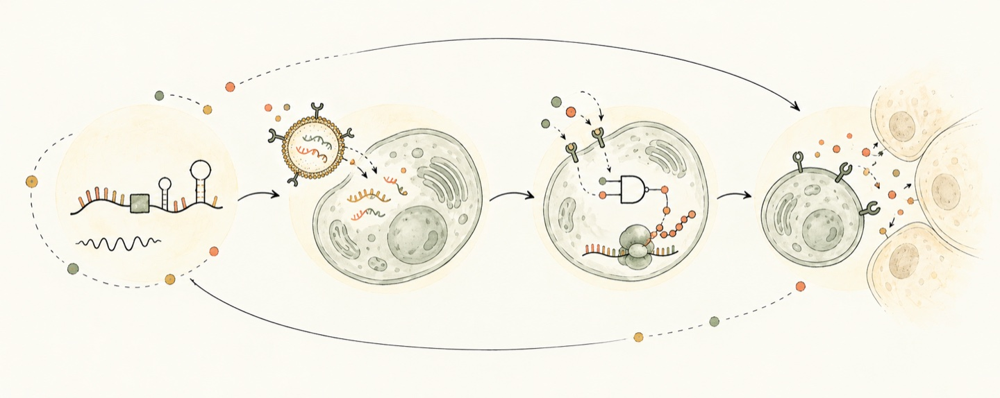
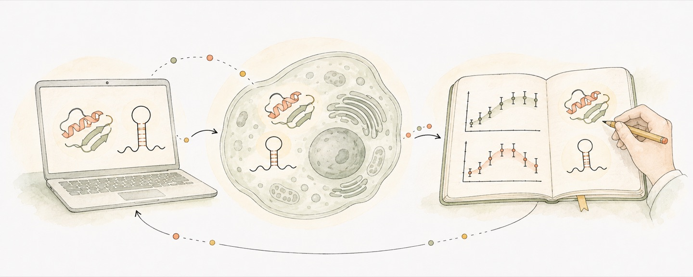

感知什么状态，在什么条件下响应
系统读取的信息，能否区分真正相关的细胞状态？换到不同的细胞或环境后，原来的判断是否仍然成立？
我想让治疗系统感知身体或细胞的状态，在需要的地点和时机起效。我还希望能控制它作用多久，以及什么时候停下来。
RNA、DNA 或蛋白质都可以作为这类系统的材料。博士阶段，我研究的是环状 RNA 的可编程翻译控制与递送载体设计。

系统读取的信息，能否区分真正相关的细胞状态？换到不同的细胞或环境后，原来的判断是否仍然成立？
有些用途需要短暂的输出，有些需要较长时间的作用。我想理解响应的强度、持续时间与细胞状态之间的关系，而不只看启动时有没有信号。
功能何时不再需要，系统能否自然清除，或者由人主动叫停？停止之后还留下什么影响，也是我想理解的控制问题。
增加数据、算力或模型规模，能否改善跨细胞状态、跨条件的预测？如果改善了，原因是什么，提出的假设又能否经得起检验？这些是我想继续研究的问题。
我也想比较 AI 对不同研究环节的价值：靶点发现、数据分析、已有药物的新适应症，以及如何把结果反馈到下一项研究。哪一步可能提速，什么比较能够说明它帮助作出了更好的决定，需要分别看证据。
